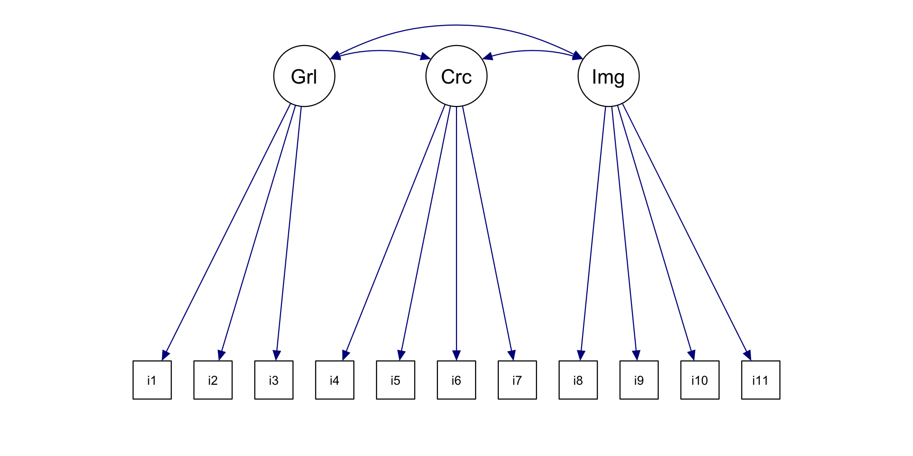
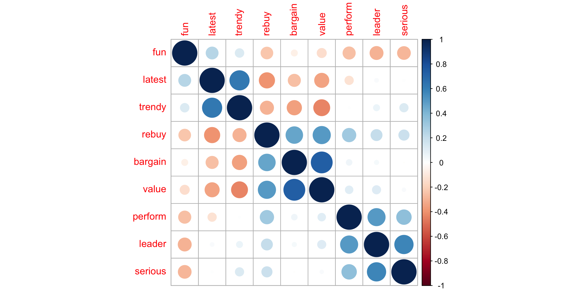
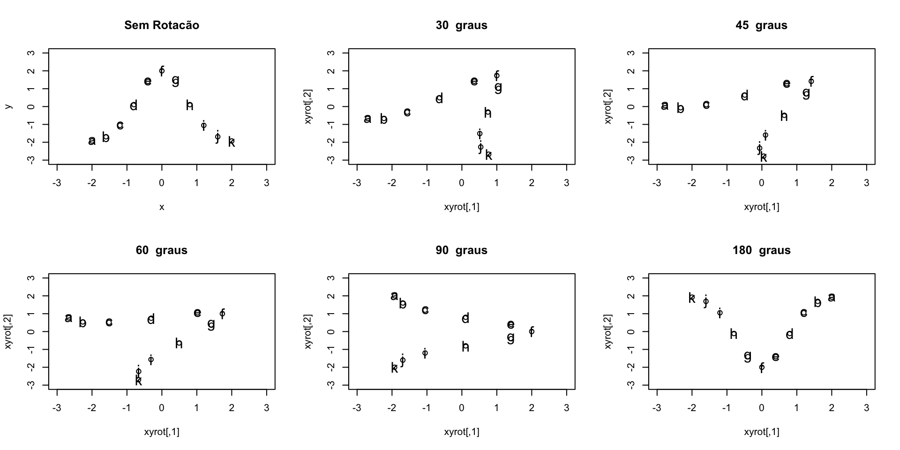
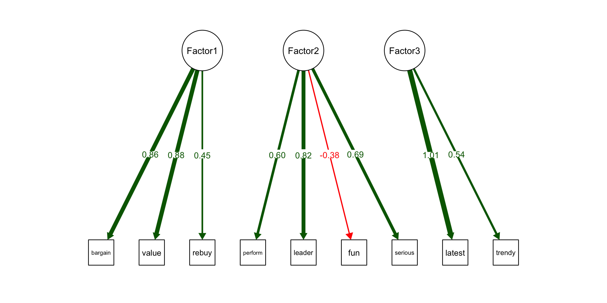
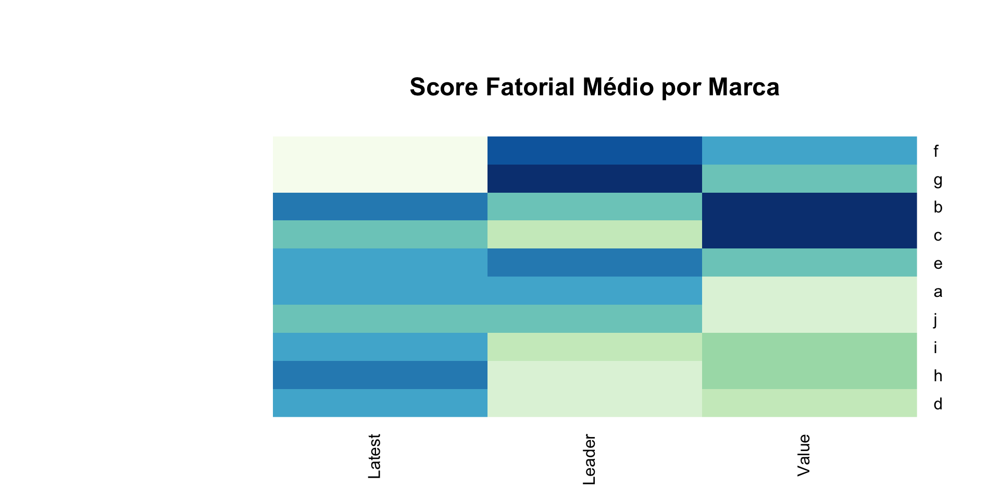

perform leader latest fun serious bargain value trendy rebuy brand
1 2 4 8 8 2 9 7 4 6 a
2 1 1 4 7 1 1 1 2 2 a
3 2 3 5 9 2 9 5 1 6 a
4 1 6 10 8 3 4 5 2 1 a
5 1 1 5 8 1 9 9 1 1 a
6 2 8 9 5 3 8 7 1 2 aAnálise Multivariada
Análise Fatorial
Prof. Washington Santos da Silva
IFMG - Campus Formiga
16 de novembro de 2023
Visão Geral
Esta apresentação é principalmente uma introdução conceitual à análise fatorial.
Vamos nos concentrar mais em conceitos e melhores práticas do que em detalhes técnicos:
- Motivação e noções básicas
- Análise Fatorial Exploratória (AFE)
Motivação
A Análise Fatorial (FA) é uma família de técnicas para avaliar a presença de construtos (conceitos) em pesquisas e avaliações psicológicas.
Fatores são considerados variáveis latentes, variáveis que não podem ser observadas diretamente, mas que podem ser imperfeitamente medidas através da sua relação com outras variáveis.
Podemos identificar exemplos canônicos de fatores em testes psicológicos e educacionais.
Motivação
Por exemplo, “inteligência” e “ansiedade” são conceitos abstratos (construtos) que não são diretamente observáveis.
No entanto, considera-se que eles podem ser observados empiricamente através de múltiplos comportamentos, cada um dos quais é um indicador imperfeito da variável latente subjacente.
Estes valores observados são conhecidos como variáveis manifestas e incluem indicadores como pontuações de testes, pesquisas respostas e outros comportamentos empíricos.
Motivação
A Análise Fatorial Exploratória (EFA) busca encontrar o grau em que fatores latentes, são responsáveis pela variância observada das variáveis manifestas.
Em marketing, frequentemente observa-se um grande número de variáveis que, acredita-se, poderiam estar relacionadas a um conjunto menor de construtos subjacentes.
Motivação
Por exemplo, não podemos observar diretamente a satisfação do cliente, mas podemos observar respostas em pesquisas que incluem perguntas sobre diferentes aspectos da experiência de um cliente, representando conjuntamente diferentes facetas do construto subjacente, satisfação.
Da mesma forma, não podemos observar diretamente a intenção de compra, sensibilidade ao preço ou engajamento, mas é possível observar vários comportamentos que estão relacionados a esses construtos.
O Conceito Geral - Versão 1
- A partir das variáveis originais, a análise fatorial (FA) busca encontrar um número menor de variáveis derivadas (fatores) que atendem às seguintes condições:
- Capturem ao máximo as correlações entre as variáveis originais (após contabilizar o erro).
- Cada fator está claramente associado a um subconjunto de variáveis.
- Cada variável está claramente associada (idealmente) a apenas um fator.
- Os fatores são diferenciados ao máximo uns dos outros.
Estas condições raramente são verificadas perfeitamente na prática.
Entretanto, é possível obter soluções aproximadas, que podem fornecer uma estrutura de fatores “simples” e interpretável.
Exemplo da Versão 1
Considere a análise fatorial (fictícia) de um teste escolar padronizado:
| Variável | Fator 1 | Fator 2 | Fator 3 |
|---|---|---|---|
| Pontuação aritmética | 0,45 | 0,88 | 0,25 |
| Pontuação álgebra | 0,51 | 0,82 | 0,03 |
| Pontuação lógica | 0,41 | 0,50 | 0,11 |
| Pontuação quebra-cabeça | 0,25 | 0,42 | 0,07 |
| Pontuação vocabulário | 0,43 | 0,09 | 0,93 |
| Pontuação leitura | 0,50 | 0,14 | 0,85 |
Podemos interpretar os fatores produzidos como:
- Fator 1: aptidão geral
- Fator 2: habilidades matemáticas
- Fator 3: competências linguísticas
O Conceito Geral - Versão 2
Outra maneira de olhar para a FA é que ela busca estimar variáveis latentes.
Uma variável latente é um processo de geração de dados não observável — como um estado mental — que se manifesta em quantidades mensuráveis, como itens de pesquisas.
Um artigo propos uma escala para avaliar o interesse em um produto, essa escalar foi projetada para avaliar três variáveis latentes:
Interesse geral em uma categoria de produto
Interesse detalhado em características específicas
Interesse no produto como um produto de “imagem”
Busca-se mensurar uma variável latente avaliando vários itens relacionados (manifestações), uma vez que qualquer item único, muito provavelmente irá capturar a variável latente de forma imperfeita.
Exemplo da Versão 2
Analise Fatorial
1. Modelo Estatístico
O modelo da análise fatoria pode ser representado por:
\[ x = \Lambda f + \epsilon \] sendo:
\(X = (X_1, X_2,\ldots,X_p)^{'}\) um vetor aleatório com vetor de médias \(\mu\) e matriz de covariância \(\Sigma\).
-
\(\Sigma = \{l_{ij}\}_{p \times k}\) é a matriz (\(p \times k\)) das cargas fatoriais.
- \(l_{ij}\) é a carga da i-ésima variável em relação ao \(j-\)ésimo fator.
\(f = (f_1, f_2,\ldots,f_k)^{'}\) é um vetor de scores fatoriais.
\(\epsilon = (\epsilon _1, \epsilon _2,\ldots,\epsilon_p)^{'}\) é um vetor de erros.
2. Hipóteses
\(f \sim (0, I_k)\), i.e, Os fatores latentes têm média zero, variância unitária e são não correlacionados.
\(\epsilon \sim (0, \varepsilon_k)\), sendo \(\varepsilon = diag(\epsilon _1, \epsilon _2,\ldots,\epsilon_p)^{'}\) com \(\epsilon_j\) denotando a j-ésima variância específica.
\(\epsilon_j\) e \(f_k\) são independentes para todo par \(j,k\).
Nenhum dos componentes além de \(x\) é observado, mas a principal restrição é que os fatores não sejam correlacionadas e tenham média zero e variância unitária, e que os erros sejam independentes com variância \(\epsilon\).
3. Estrutura de Covariância Implícita de X
\[ \begin{align*} V(X) = \Sigma &= E[(X - \mu)(X - \mu)^{'}], \\ &= E[(\Lambda f + \epsilon)(\Lambda f + \epsilon)^{'}], \\ &= E[\Lambda f f^{'} \Lambda^{'}] + E[\Lambda f \epsilon^{'}] + E[\epsilon f^{'} \Lambda^{'}] + E[\epsilon \epsilon^{'}], \\ &= \Lambda E[ff^{'}] \Lambda^{'} + \Lambda E[f\epsilon^{'}] + E[\epsilon f^{'}]\Lambda^{'} + E[\epsilon \epsilon^{'}], \\ \Sigma &= \Lambda \Lambda^{'} + \varepsilon \end{align*} \]
Visto que: \(E[ff^{'}] = I_k\), \(E[f\epsilon^{'}] = 0_{k \times p}\), \(E[\epsilon f^{'}] = 0_{p \times k}\) e \(E[\epsilon \epsilon^{'}] = \varepsilon\).
Isto implica que a covariância entre \(X\) e \(f\) tem a forma:
\[ \begin{align*} Cov(X,f) &= E[(X - \mu)f^{'}], \\ &= E[(\Lambda f + \epsilon)f^{'}], \\ &= \Lambda \end{align*} \]
- Assim, podemos notar que o modelo da análise fatorial é em essência um modelo para a matriz de correlação de \(x\).
4. Variância Explicada pelos Fatores Comuns
A porção da variância da \(i-\)ésima variável que é explicada pelos k fatores comuns é chamada de comunalidade da i-ésima variável:
\[ \underbrace{\sigma_{ii}}_{V(X_i)} = \underbrace{h_{i}^2}_{\text{communality}} + \underbrace{\varepsilon_i}_{\text{uniqueness}} \] sendo:
\(\sigma_{ii}\) a variância de \(X_i\)
\(h_{i}^2 = (\Lambda \Lambda^{'})_{ii} = \lambda_{i1}^2 + \lambda_{i2}^2 + \ldots + \lambda_{ik}^2\) é a communality de \(X_i\).
$_i = $ é a variância específica, ou uniqueness, de \(X_i\).
Note que a communality \(h_{i}^2\) é a soma das cargas quadráticas de \(X_i\).
Estimação por Máxima Verossimilhança do Modelo Fatorial
Note que os parâmetros de interesse são as cargas fatoriais (\(\Lambda\)) e as variâncias específicas (uniqueness) da diagonal de \(\varepsilon\).
Suponha que \(x \overset{\text{i.i.d.}}{\sim} N(\mu, \Lambda \Lambda^{'} + \varepsilon)\) seja um vetor normal multivariado.
A função log-verossimilhança para uma amostra de n observações tem a forma:
\[ \log L_n(\mu, \Lambda, \varepsilon;x) = \frac{np\log(2\pi)}{2} + \frac{n\log(|\Sigma^{-1}|)}{2} + \frac{\sum_{i=1}^{n} (x_i - \mu)^{'} \Sigma^{-1}(x_i - \mu))}{2} \]
sendo \(\Sigma = \Lambda \Lambda^{'} + \varepsilon\).
Utilizamos um algoritmo iterativo para maximizar $L_n(, , ;x) $.
Este é o método implementado na função
factanal()da linguagem R e na funçãopsych::fa()do pacote psych.-
Há outros métodos:
- Via Componentes Principais/Decomposição em Valor Singular (SVD)
- Mínimos Quadrados Ordinários
- Método Iterativo de Fatoração do Eixo Principal
Solução Indeterminada
Ainda há alguma indeterminação no modelo, pois ele permanece inalterado se \(\Lambda\) for substituída por \(G\Lambda\) para qualquer matriz ortogonal \(G\).
Estas matrizes \(G\) são conhecidas como rotações, embora o termo também seja aplicado a matrizes invertíveis não ortogonais.
Tipos de Análise Fatorial
Análise Fatorial Exploratória (EFA)
- Pergunta quais são os fatores nos dados observados
- Requer interpretação
- Antes de assumir que está correto, necessário confirmar com a CFA
Análise Fatorial Confirmatória (CFA)
- Pergunta quão bem um modelo proposto se ajusta a determinados dados
- É um tipo de Modelo de Equações Estruturais (SEM)
- Não fornece uma resposta absoluta; é necessário comparar modelos
Termos e símbolos principais
Variável latente: um suposto processo cognitivo ou de geração de dados que leva a dados observáveis. Muitas vezes é uma construção teórica. Exemplo: Interesse no produto. Símbolo: círculo/oval.
Variável manifesta: variáveis observáveis que expressam variáveis latentes. Exemplo: “Quão interessado você está neste produto? [1-5]” Símbolo: caixa.
Fator: redução dimensional que estima uma variável latente e seu relacionamento com variáveis manifestas. Exemplo: Interesse geral em uma categoria de produto.
Termos e símbolos principais
Cargas: a força do relacionamento entre um fator e uma variável. Exemplo: F1 \(\rightarrow\) v1 = 0,45. Intervalo [-1,0 … 1,0], iguais ao r de Pearson.
Visualização
Etadas para EFA
Importar e preparar os dados (padronização e lidar com assimetrias).
Examine a matriz de correlação para ter uma ideia dos possíveis fatores.
Determine o número de fatores.
Escolha uma rotação dos fatores (mais em instantes).
Ajuste o modelo e interprete os fatores resultantes.
Repita 3-5 se os resultados não forem claros, selecione o mais útil.
Use os scores fatoriais como melhor estimativa do construto/variável latente.
Agora … dados!
O arquivo
brand.csvcontém dados típicos de pesquisas sobre percepção de marcas (brand perception survey).Esses dados refletem as avaliações dos consumidores sobre as marcas em relação aos adjetivos ou atributos perceptivos expressos nos itens da pesquisa.
Uma questão desse tipo de pesquisa possui, em geral, a seguinte forma:
Em uma escala de 1 a 10 – onde 1 é o mínimo e 10 é o máximo – quão [ADJETIVO ou ATRIBUTO] é a [MARCA A]?
Brand perception survey
Nos dados produzidas por este tipo de pesquisa, uma observação (linha) é a avaliação que um entrevistado faz de uma marca em um dos adjetivos. Dois exemplos de questões deste tipo são:
Quão última moda (trendy) é o Café Dona Maria?
Quão líder de categoria é o Café Três Coracões?
Brand perception survey
Os dados envolvem classificações simuladas de 10 marcas (brands) (nomeadas como
aaj) em 9 adjetivos, para \(N = 100\) entrevistados.Os 9 adjetivos são:
perform,leader,latest,fun,serious,bargain,value,trendyerebuy.
Brand perception survey
Rows: 1,000
Columns: 10
$ perform <int> 2, 1, 2, 1, 1, 2, 1, 2, 2, 3, 2, 1, 3, 1, 3, 3, 2, 3, 2, 2, 2,…
$ leader <int> 4, 1, 3, 6, 1, 8, 1, 1, 1, 1, 1, 2, 3, 5, 1, 2, 1, 8, 5, 3, 2,…
$ latest <int> 8, 4, 5, 10, 5, 9, 5, 7, 8, 9, 5, 7, 10, 7, 3, 7, 6, 9, 10, 9,…
$ fun <int> 8, 7, 9, 8, 8, 5, 7, 5, 10, 8, 6, 7, 10, 10, 6, 6, 7, 9, 8, 10…
$ serious <int> 2, 1, 2, 3, 1, 3, 1, 2, 1, 1, 1, 2, 1, 2, 1, 1, 2, 4, 2, 2, 1,…
$ bargain <int> 9, 1, 9, 4, 9, 8, 5, 8, 7, 3, 1, 3, 3, 1, 3, 10, 1, 7, 6, 2, 5…
$ value <int> 7, 1, 5, 5, 9, 7, 1, 7, 7, 3, 1, 2, 3, 3, 4, 5, 3, 10, 10, 6, …
$ trendy <int> 4, 2, 1, 2, 1, 1, 1, 7, 5, 4, 1, 1, 3, 3, 4, 1, 5, 4, 5, 5, 3,…
$ rebuy <int> 6, 2, 6, 1, 1, 2, 1, 1, 1, 1, 2, 5, 3, 1, 2, 3, 1, 2, 2, 2, 2,…
$ brand <chr> "a", "a", "a", "a", "a", "a", "a", "a", "a", "a", "a", "a", "a…Brand perception survey
Estatísticas Descritivas
perform leader latest fun
Min. : 1.000 Min. : 1.000 Min. : 1.000 Min. : 1.000
1st Qu.: 1.000 1st Qu.: 2.000 1st Qu.: 4.000 1st Qu.: 4.000
Median : 4.000 Median : 4.000 Median : 7.000 Median : 6.000
Mean : 4.488 Mean : 4.417 Mean : 6.195 Mean : 6.068
3rd Qu.: 7.000 3rd Qu.: 6.000 3rd Qu.: 9.000 3rd Qu.: 8.000
Max. :10.000 Max. :10.000 Max. :10.000 Max. :10.000
serious bargain value trendy
Min. : 1.000 Min. : 1.000 Min. : 1.000 Min. : 1.00
1st Qu.: 2.000 1st Qu.: 2.000 1st Qu.: 2.000 1st Qu.: 3.00
Median : 4.000 Median : 4.000 Median : 4.000 Median : 5.00
Mean : 4.323 Mean : 4.259 Mean : 4.337 Mean : 5.22
3rd Qu.: 6.000 3rd Qu.: 6.000 3rd Qu.: 6.000 3rd Qu.: 7.00
Max. :10.000 Max. :10.000 Max. :10.000 Max. :10.00
rebuy brand
Min. : 1.000 Length:1000
1st Qu.: 1.000 Class :character
Median : 3.000 Mode :character
Mean : 3.727
3rd Qu.: 5.000
Max. :10.000 Brand perception survey
Padronizando as primeiras 9 colunas:
perform leader latest fun
Min. :-1.0888 Min. :-1.3100 Min. :-1.6878 Min. :-1.84677
1st Qu.:-1.0888 1st Qu.:-0.9266 1st Qu.:-0.7131 1st Qu.:-0.75358
Median :-0.1523 Median :-0.1599 Median : 0.2615 Median :-0.02478
Mean : 0.0000 Mean : 0.0000 Mean : 0.0000 Mean : 0.00000
3rd Qu.: 0.7842 3rd Qu.: 0.6069 3rd Qu.: 0.9113 3rd Qu.: 0.70402
Max. : 1.7206 Max. : 2.1404 Max. : 1.2362 Max. : 1.43281
serious bargain value trendy
Min. :-1.1961 Min. :-1.22196 Min. :-1.3912 Min. :-1.53897
1st Qu.:-0.8362 1st Qu.:-0.84701 1st Qu.:-0.9743 1st Qu.:-0.80960
Median :-0.1163 Median :-0.09711 Median :-0.1405 Median :-0.08023
Mean : 0.0000 Mean : 0.00000 Mean : 0.0000 Mean : 0.00000
3rd Qu.: 0.6036 3rd Qu.: 0.65279 3rd Qu.: 0.6933 3rd Qu.: 0.64914
Max. : 2.0434 Max. : 2.15258 Max. : 2.3610 Max. : 1.74319
rebuy brand
Min. :-1.0717 Length:1000
1st Qu.:-1.0717 Class :character
Median :-0.2857 Mode :character
Mean : 0.0000
3rd Qu.: 0.5003
Max. : 2.4652 Análise Fatorial Exploratória
Para determinarmos o número de fatores, podemos visualizar a matriz de correlações:
Podemos visualizar a formação de 3 clusters envolvendo variáveis similares, o primeiro envolve fun, latest e trendy, o segundo rebuy, bargain e value, e o terceiro perform, leader e serious.
Análise Fatorial Exploratória
Outra possibilidade para determinarmos o número de fatores é usar um Scree Plot.
Neste caso, retemos o número de fatores que apresentam o autovalor (uma métrica para proporção de variância explicada) maior que 1,0.
Um autovalor igual a 1,0 corresponde à quantidade de variância que pode ser atribuída a uma única variável manifesta. Assim, um fator que capture menos variância do que tal item pode ser considerado relativamente sem importância.
Análise Fatorial Exploratória
Scree Plot
- A função
nScree()do pacotenFactorsaplica vários métodos para estimar o número de fatores e, no presente caso, três dos quatro métodos sugerem utilizarmos 3 fatores para modelar os dados.
Análise Fatorial Exploratória
- Podemos examinar os autovalores aplicando a função
eigen()a uma matriz de correlação:
eigen() decomposition
$values
[1] 2.9792956 2.0965517 1.0792549 0.7272110 0.6375459 0.5348432 0.3901044
[8] 0.3120464 0.2431469
$vectors
[,1] [,2] [,3] [,4] [,5] [,6]
[1,] 0.2374679 -0.41991179 0.03854006 0.52630873 0.46793435 -0.3370676
[2,] 0.2058257 -0.52381901 -0.09512739 0.08923461 -0.29452974 -0.2968860
[3,] -0.3703806 -0.20145317 -0.53273054 -0.21410754 0.10586676 -0.1742059
[4,] -0.2510601 0.25037973 -0.41781346 0.75063952 -0.33149429 0.1405367
[5,] 0.1597402 -0.51047254 -0.04067075 -0.09893394 -0.55515540 0.3924874
[6,] 0.3991731 0.21849698 -0.48989756 -0.16734345 -0.01257429 -0.1393966
[7,] 0.4474562 0.18980822 -0.36924507 -0.15118500 -0.06327757 -0.2195327
[8,] -0.3510292 -0.31849032 -0.37090530 -0.16764432 0.36649697 0.2658186
[9,] 0.4390184 -0.01509832 -0.12461593 0.13031231 0.35568769 0.6751400
[,7] [,8] [,9]
[1,] 0.364179109 -0.14444718 0.05223384
[2,] -0.613674301 0.28766118 -0.17889453
[3,] -0.185480310 -0.64290436 0.05750244
[4,] -0.007114761 0.07461259 0.03153306
[5,] 0.445302862 -0.18354764 0.09072231
[6,] 0.288264900 0.05789194 -0.64720849
[7,] 0.017163011 0.14829295 0.72806108
[8,] 0.153572108 0.61450289 0.05907022
[9,] -0.388656160 -0.20210688 -0.01720236Os três primeiros autovalores são maiores que 1,0, embora dificilmente o seja para o terceiro valor.
Isto novamente sugere 3 ou, talvez, 2 fatores.
Análise Fatorial Exploratória
A escolha de um modelo final depende da sua utilidade.
Para a EFA, uma prática recomendada é testar algumas soluções fatoriais, incluindo aquelas sugeridas pelos resultados do scree plot e dos autovalores
Assim, testaremos uma solução com 3 fatores e outra com 2 fatores para ver qual delas é mais útil.
Podemos estimar o modelo fatorial com a função
factanal(x, factors = K), sendo \(K\) o número de fatores a serem ajustados.
Modelo Fatorial: 2 fatores
Call:
factanal(x = brand_df[, 1:9], factors = 2)
Uniquenesses:
perform leader latest fun serious bargain value trendy rebuy
0.635 0.332 0.796 0.835 0.527 0.354 0.225 0.708 0.585
Loadings:
Factor1 Factor2
perform 0.600
leader 0.818
latest -0.451
fun -0.137 -0.382
serious 0.686
bargain 0.803
value 0.873 0.117
trendy -0.534
rebuy 0.569 0.303
Factor1 Factor2
SS loadings 2.245 1.759
Proportion Var 0.249 0.195
Cumulative Var 0.249 0.445
Test of the hypothesis that 2 factors are sufficient.
The chi square statistic is 556.19 on 19 degrees of freedom.
The p-value is 8.66e-106 Modelo Fatorial: 2 fatores
As cargas fatoriais do Fator 1 com
bargainevaluesão altas. Assim, podemos interpretá-lo como um fator relacionado a “valor”.O Fator 2 possui altas cargas fatoriais associadas com
leadereserious. Podemos interpretá-lo como um fator relacionado a “líder de categoria”.Esta não é uma má interpretação, mas vamos compará-la a uma solução de 3 fatores.
Modelo Fatorial: 3 fatores
Call:
factanal(x = brand_df[, 1:9], factors = 3)
Uniquenesses:
perform leader latest fun serious bargain value trendy rebuy
0.624 0.327 0.005 0.794 0.530 0.302 0.202 0.524 0.575
Loadings:
Factor1 Factor2 Factor3
perform 0.607
leader 0.810 0.106
latest -0.163 0.981
fun -0.398 0.205
serious 0.682
bargain 0.826 -0.122
value 0.867 -0.198
trendy -0.356 0.586
rebuy 0.499 0.296 -0.298
Factor1 Factor2 Factor3
SS loadings 1.853 1.752 1.510
Proportion Var 0.206 0.195 0.168
Cumulative Var 0.206 0.401 0.568
Test of the hypothesis that 3 factors are sufficient.
The chi square statistic is 64.57 on 12 degrees of freedom.
The p-value is 3.28e-09 Modelo Fatorial: 3 fatores
A solução de 3 fatores mantém os fatores associados a “valor” e “líder de categoria”.
Mas adiciona um claro fator associado a “mais recente” que possui altas cargas fatoriais com
latestetrendy.Isso adiciona um conceito interpretável à nossa compreensão dos dados.
Ele também se alinha com a maior parte das sugestões dos testes scree e autovalores.
Portanto, consideramos o modelo com 3 fatores superior ao com 2 fatores, porque os fatores são mais interpretáveis.
Rotações
O resultado da EFA é simiar ao da PCA: uma matriz de fatores (semelhante a matriz de rotação da PCA) e sua relação com as variáveis originais (cargas dos fatores nas variáveis).
Mas ao contrário da PCA, a EFA tenta encontrar soluções que sejam maximamente interpretáveis em termos das variáveis manifestas.
Em geral, tenta encontrar soluções nas quais um pequeno número de cargas para cada fator sejam altas, enquanto outras cargas para esse fator sejam baixas.
Quando isso é possível, esse fator pode ser interpretado em termos desse pequeno conjunto de variáveis manifestas.
Rotações
Para conseguir isso, a EFA usa rotações que começam com uma solução matemática não correlacionada (ortogonal) e depois alteram matematicamente a solução que explica a mesma prop. da variância, mas com cargas diferentes nas variáveis originais.
Existem muitas rotações disponíveis e elas normalmente compartilham o objetivo de maximizar as cargas em algumas variáveis, ao mesmo tempo em que tornam os fatores tão distintos quanto possível uns dos outros.
No entanto, algumas rotações são mais úteis do que outras porque ficam entre os itens grandes, em vez de dividi-los.
Rotações
Quando isso ocorre, pode-se ter uma “fatia de tomate”, uma “fatia de cogumelo”, uma “fatia meio a meio de tomate e cogumelo” e assim por diante.
Ao girar e cortar de forma diferente, torna-se a substância subjacente mais interpretável em relação aos seus objetivos (como ter fatias de pizza diferenciadas).
Nenhuma rotação é inerentemente melhor ou pior, mas algumas são mais úteis que outras.
Da mesma forma, as variáveis manifestas na EFA podem ser divididas de várias maneiras, de acordo com os objetivos de interpretação dos fatores latentes.
Rotações
Isto posto, uma solução de análise fatorial pode ser rotacionada para ter novas cargas que representem a mesma proporção de variância.
Embora uma análise completa sobre rotações esteja fora do escopo deste curso, há uma questão que vale a pena considerar em qualquer EFA: você deseja permitir que os fatores sejam correlacionados entre si ou não?
Podemos pensar que devemos deixar os dados decidirem. No entanto, a questão de permitir fatores correlacionados é menos uma questão sobre os dados do que sobre o conceito dos fatores latentes subjacentes.
Consideramos que os fatores deveriam ser conceitualmente independentes ou faz mais sentido considerá-los relacionados? Uma rotação EFA pode ser obtida sob qualquer hipótese.
Rotações
O padrão da função
factanal()é encontrar fatores que tenham correlação zero (usando uma rotaçãovarimax).Voltando aos nossos dados, podemos julgar que é razoavelmente esperado que os fatores “valor” e “líder de categoria” estejam relacionados.
Em muitas categorias, o líder pode obter um prêmio no preço e, portanto, poderíamos esperar que essas duas construções latentes estivessem negativamente correlacionadas, em vez de serem independentes uma da outra.
Isso sugere que poderíamos permitir fatores correlacionados em nossa solução.
A rotação a ser usado neste caso é a rotação oblíqua (“oblíqua” porque os eixos dimensionais não são perpendiculares, mas “distorcidos” pela correlação entre os fatores).
Rotação Oblíqua
- Uma rotação oblíqua comum é a rotação
oblimindo pacote GPArotation.
library(GPArotation)
# modelo fatorial com rotação oblíqua
(brand_fa_ob <- factanal(brand_df[, 1:9], factors = 3, rotation = "oblimin"))
Call:
factanal(x = brand_df[, 1:9], factors = 3, rotation = "oblimin")
Uniquenesses:
perform leader latest fun serious bargain value trendy rebuy
0.624 0.327 0.005 0.794 0.530 0.302 0.202 0.524 0.575
Loadings:
Factor1 Factor2 Factor3
perform 0.601
leader 0.816
latest 1.009
fun -0.381 0.229
serious 0.689
bargain 0.859
value 0.880
trendy -0.267 0.128 0.538
rebuy 0.448 0.255 -0.226
Factor1 Factor2 Factor3
SS loadings 1.789 1.733 1.430
Proportion Var 0.199 0.193 0.159
Cumulative Var 0.199 0.391 0.550
Factor Correlations:
Factor1 Factor2 Factor3
Factor1 1.0000 -0.388 0.0368
Factor2 -0.3884 1.000 -0.1091
Factor3 0.0368 -0.109 1.0000
Test of the hypothesis that 3 factors are sufficient.
The chi square statistic is 64.57 on 12 degrees of freedom.
The p-value is 3.28e-09 Rotação Oblíqua
Quando comparamos o resultado da rotação oblimin com a rotação varimax, há duas diferenças principais:
As cargas fatoriais são ligeiramente diferentes para os relacionamentos dos fatores com os adjetivos. No entanto, as cargas são suficientemente semelhantes para que não haja mudança substancial na forma como interpretaríamos os factores. Há ainda fatores para “valor,” “líder,” e “mais recente”.
O resultado inclui uma matriz de correlação de fatores que mostra as relações entre os fatores latentes estimados. O Fator 1 (valor) é negativamente correlacionado com o Fator 2 (líder), r = −0,39, e é essencialmente não correlacionado com o Fator 3 (mais recente), r = 0,037.
Rotação Oblíqua
A correlação negativa entre os fatores 1 e 2 é consistente com a nossa teoria de que marcas “líderes” tendem a não serem marcas de “valor” e, portanto, pensamos que este é um resultado mais interpretável.
No entanto, em outros casos, uma rotação correlacionada pode, ou não, ser uma solução melhor do que uma rotação ortogonal.
Esta é em grande parte uma questão a ser decidida com base no conhecimento do domínio e na utilidade interpretativa, e não em Estatística.
EFA: Visualização
As cargas fatoriais (fator-item) são exibidas no resultado anterior.
No objeto
brand_fa_ob, elas estão armazenadas no elementobrand_fa_ob$loadings.Podemos visualizar o relacionamento fator-item com um mapa de calor das cargas.
EFA: Visualização
EFA: Visualização

EFA: Visualização
O mapa de calor mostra uma separação distinta de itens em três fatores, que podem ser interpretados aproximadamente como “valor”, “líder” e “mais recente”.
Observe que o item
rebuy, que reflete a intenção declarada de recompra, possui cargas relevantes tanto no Fator1 (valor) quanto no Fator2 (líder).Isto sugere que, com base nesses dados, os consumidores indicam que recomprariam uma marca tanto por ter um bom valor ou porque é líder.
EFA: Visualização
Outro gráfico útil para modelos de análise fatorial é um path diagram, que mostra as variáveis latentes e os itens individuais que possuem altas cargas associadas às variáveis latentes.
O função
semPaths()do pacote semPlot produz uma representação visual de um modelo de análise fatorial.
EFA: Visualização

Função semPlot::semPaths()
Plotamos o modelo
brand_fa_obajustado anteriormente.Para plotar as estimativas das cargas, usamos
what = "est".Omitimos as estimativas residuais para variáveis manifestas usando
residuals = FALSE.Em seguida, cortamos cargas com magnitude absoluta < 0,3 adicionando
cut = 0.3e as opçõesposCol = c("white", "darkgreen")enegCol = c("white", "red").O argumento
posColfaz com que cargas positivas < 0,3 sejam coloridas em branco (e, portanto, não aparecem na saída), enquanto cargas > 0,3 devem ser verdes escuras.O argumento
negColexclui ou usa vermelho para cargas < 0.Ajustamos o tamanho do texto das cargas com
edge.label.cexe criamos espaço para os nomes completos de variáveis comnCharNodes.
EFA: Pesquisa sobre a Percepcão de Marcas
No geral, o resultado da EFA para este conjunto de dados é que, em vez de utilizar 9 variáveis, poderíamos representar os dados com 3 fatores latentes subjacentes.
Vimos que cada fator é mapeado para 2–4 das variáveis manifestas.
No entanto, esta análise modelou apenas as relações das variáveis de classificação entre si.
Na próxima seção, usaremos os scores dos fatores estimados para aprendermos sobre as marcas.
EFA: Scores dos Fatores
Além de estimar a estrutura fatorial, a EFA também estima os scores dos fatores latentes para cada observação.
Para nossa pesquisa, isto fornece as melhores estimativas das classificações latentes de cada consumidor para os fatores “valor”, “líder” e “mais recentes”.
Podemos então usar os scores dos fatores para determinar as posições das marcas em relação aos fatores.
A interpretação dos scores dos fatores permite nos concentrarmos em um conjunto menor e interpretável de dimensões que mapeiam construtos ao invés de itens individuais.
EFA: Scores dos Fatores
brand_fa_ob <- factanal(brand_df[, 1:9],
factors = 3, rotation = "oblimin",
scores = "Bartlett"
)
brand_scores <- data.frame(brand_fa_ob$scores)
brand_scores$brand <- brand_df$brand
head(brand_scores) Factor1 Factor2 Factor3 brand
1 1.6521364 -0.6886749 0.5256104 a
2 -1.4005333 -1.6681901 -0.6764121 a
3 1.1457311 -1.0618008 -0.4285853 a
4 0.2009725 -0.3245462 1.2113424 a
5 2.0002009 -1.9071519 -0.4559905 a
6 1.4175063 0.3339462 0.8555525 aObtemos os scores dos fatores usando o argumento
scores = ....Utilizamos os scores de Bartlett e os extraímos do objeto
factanal()combrand_fa_ob$scores, e armazenamos os scores na data framebrand_scores.
EFA: Scores dos Fatores
O resultado são scores estimados para cada respondente em cada fator e marca.
Se desejarmos investigar correlações dos fatores com dados demográficos ou comportamento de compra, poderíamos usar essas estimativas dos scores dos fatores.
Isto pode ser muito útil em análises como regressão e segmentação porque reduz a complexidade do modelo (número de dimensões), pois ao invés de 9 itens, temos três fatores.
EFA: Scores dos Fatores
Para encontrar a posição geral de uma marca, odemos usar a função aggregate() para calcular as avaliações médias agregadas por marca, ou seja, a média de cada variável (adjetivo) por marca.
# calulca avaliacoes medias agregadas por marca
brand_fa_media <- aggregate(. ~ brand, data = brand_scores, mean)
# nomes das marcas como nome das linhas,
rownames(brand_fa_media) <- brand_fa_media[, 1]
# elimina a primeira coluna contendo os nomes
brand_fa_media <- brand_fa_media[, -1]
# nomeando as colunas com o nome dos fatores estimados
names(brand_fa_media) <- c("Leader", "Value", "Latest")
brand_fa_media Leader Value Latest
a 0.23158792 -1.06993703 0.39326652
b 0.09686823 1.51913070 0.72391174
c -0.58937138 1.45069457 -0.07690784
d -1.04380419 -0.78186861 0.37914638
e 0.52169760 -0.05373430 0.43709349
f 1.15218492 0.45442899 -1.28395765
g 1.36873947 0.04408369 -1.31900029
h -0.91592078 -0.31418560 0.52676516
i -0.66918513 -0.20741901 0.37331202
j -0.15279666 -1.04119340 -0.15362952EFA: Scores dos Fatores
Finalmente, um mapa de calor pode representar graficamente os scores médios por marca:
EFA: Scores dos Fatores

Conclusões
Podemos concluir que a Análise Fatorial Exploratória é uma forma útil de examinar a estrutura subjacente e o relacionamento entre as variáveis.
Quando os itens estão relacionados aos construtos subjacentes, a EFA reduz a complexidade dos dados, agregando variáveis para criar criar variáveis latentes mais simples e interpretáveis.